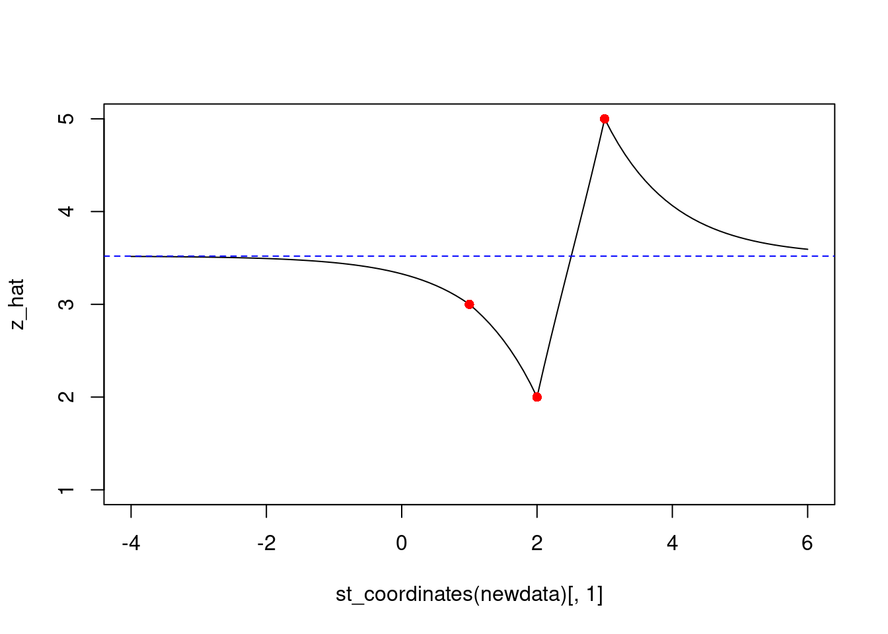
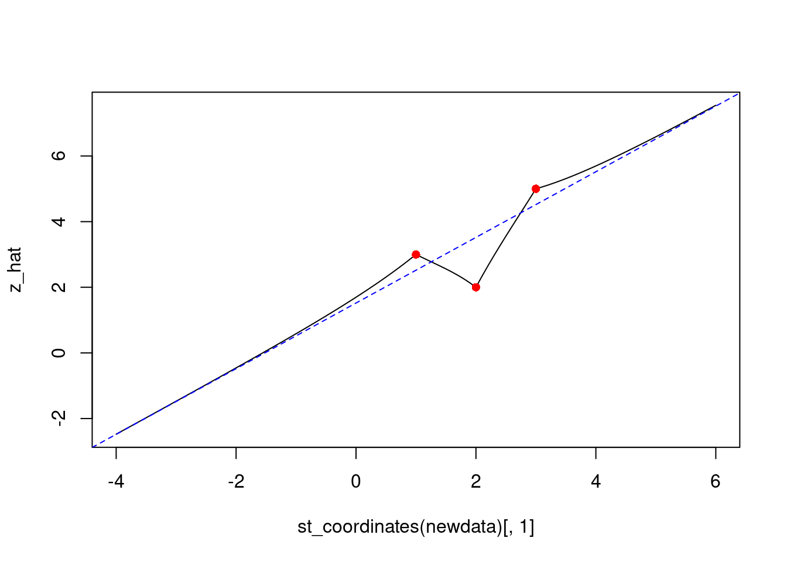
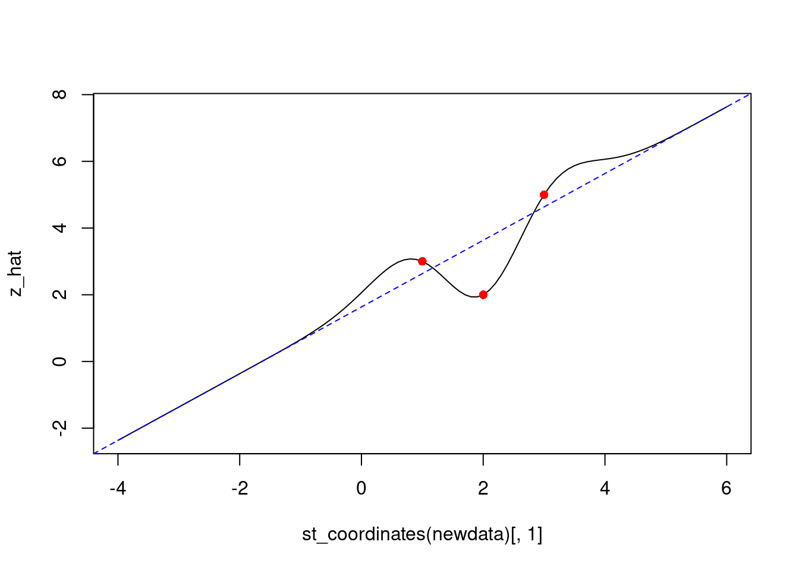
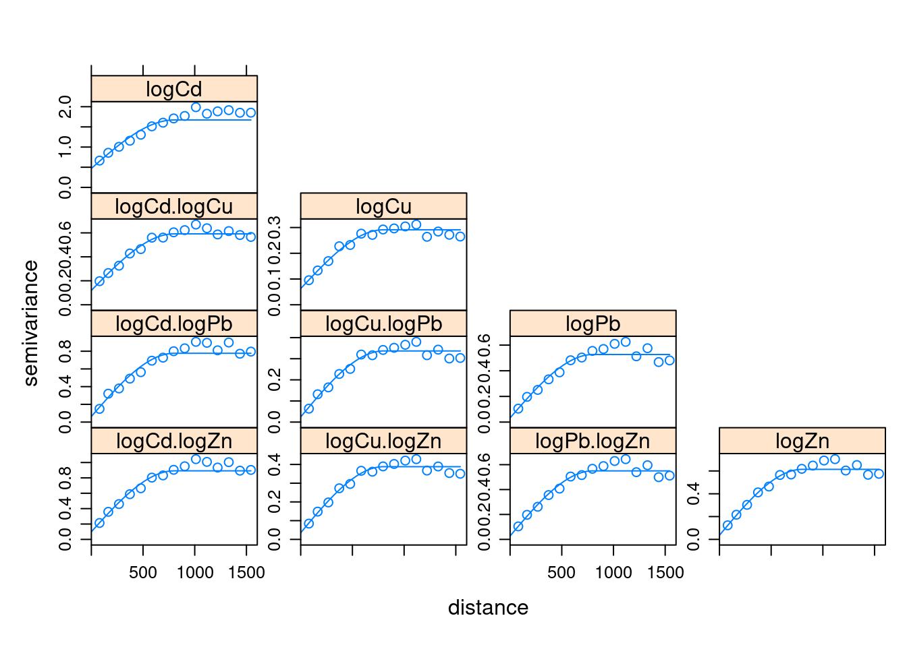
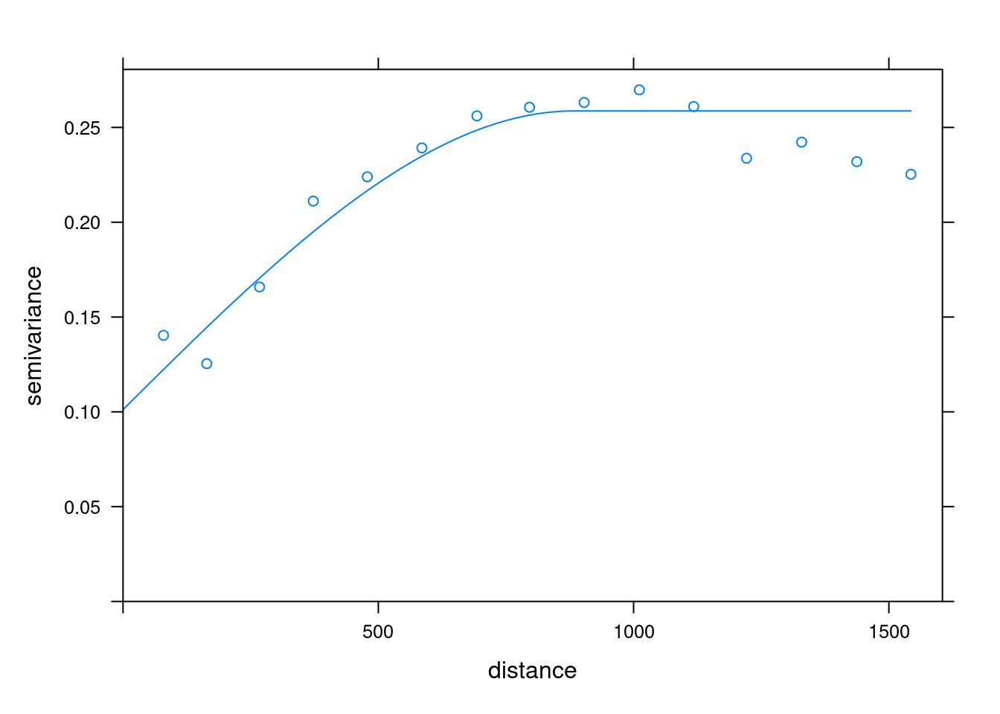
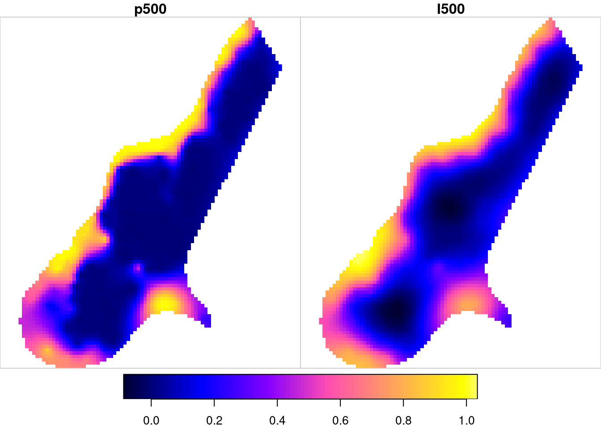
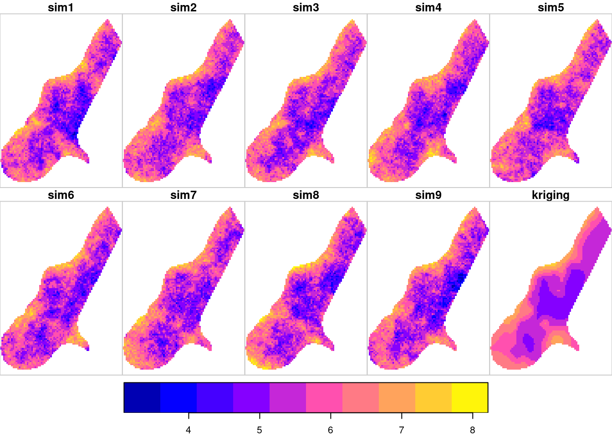
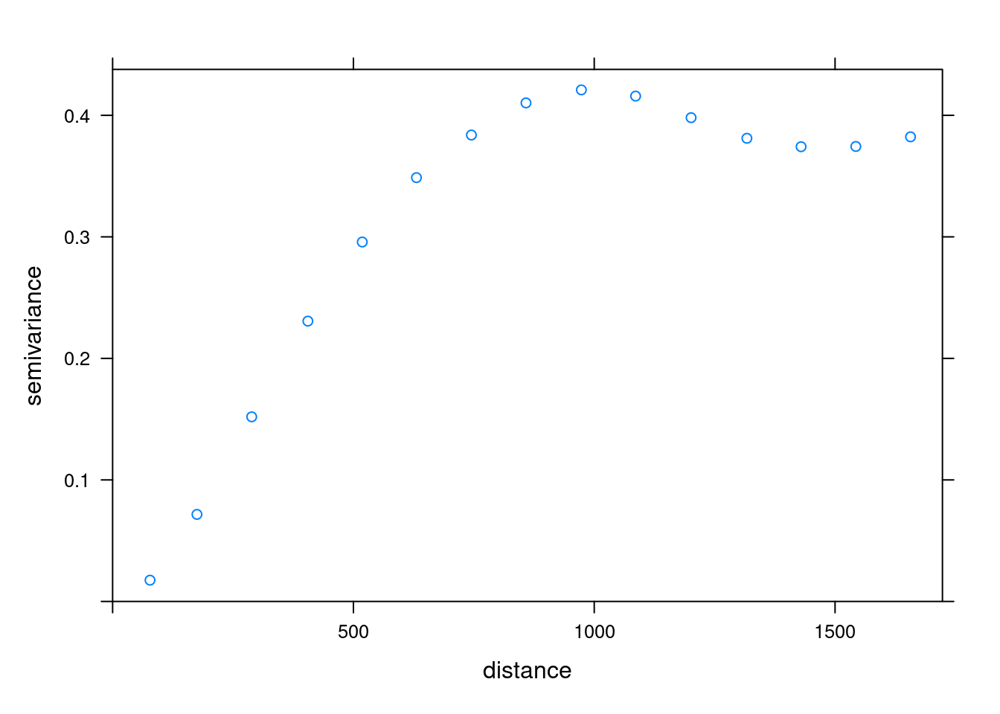
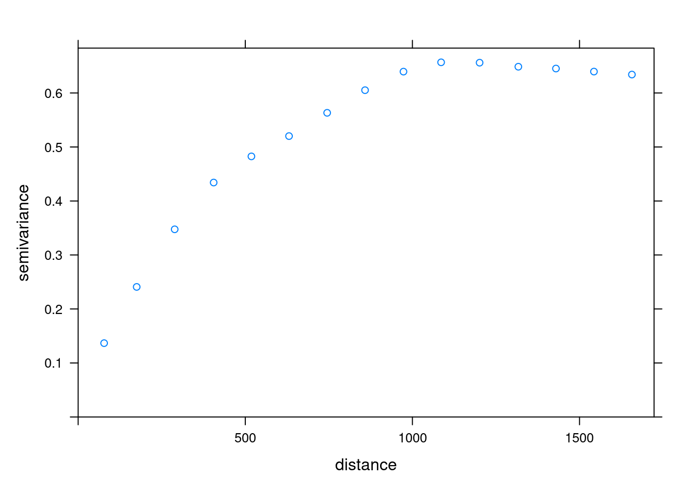

library(sf) # st_distance
# Linking to GEOS 3.10.2, GDAL 3.4.3, PROJ 8.2.1; sf_use_s2() is TRUE
cov = function(h) exp(-h)
calc_beta = function(X, V, z) {
XtVinv = t(solve(V, X))
solve(XtVinv %*% X, XtVinv %*% z)
}
uk = function(data, newdata, X, x0, cov, beta) {
V = cov(st_distance(data))
v = cov(st_distance(data, newdata))
z = data[[1]]
if (missing(beta))
beta = calc_beta(X, V, z)
mu = X %*% beta
x0 %*% beta + t(v) %*% solve(V, z - mu)
}
# prediction location at (0,1):
newdata = st_as_sf(data.frame(x = 0, y = 1), coords = c("x", "y"))
# observation location at (1,1), with attribute value (y) 3:
data = st_as_sf(data.frame(x = 1, y = 1, z = 3), coords = c("x", "y"))
x0 = matrix(1, 1, 1)
X = x0
uk(data, newdata, X, x0, cov)
# [,1]
# [1,] 3
# three observations location, with attribute values (y) 3,2,5:
data = st_as_sf(data.frame(x = c(1,2,3), y = c(1,1,1), z = c(3, 2, 5)),
coords = c("x", "y"))
newdata = st_as_sf(data.frame(x = .1 * 0:20, y = 1), coords = c("x", "y"))
X = matrix(1,3,1)
x0 = matrix(1, nrow(newdata), 1)
uk(data, newdata, X, x0, cov) # mu = unknown
# [,1]
# [1,] 3.33
# [2,] 3.31
# [3,] 3.29
# [4,] 3.26
# [5,] 3.23
# [6,] 3.20
# [7,] 3.17
# [8,] 3.13
# [9,] 3.09
# [10,] 3.05
# [11,] 3.00
# [12,] 2.94
# [13,] 2.87
# [14,] 2.79
# [15,] 2.71
# [16,] 2.62
# [17,] 2.51
# [18,] 2.40
# [19,] 2.28
# [20,] 2.15
# [21,] 2.008 Unknown, varying mean
\[ \newcommand{\E}{{\rm E}} % E expectation operator \newcommand{\Var}{{\rm Var}} % Var variance operator \newcommand{\Cov}{{\rm Cov}} % Cov covariance operator \newcommand{\Cor}{{\rm Corr}} \]
For this, we need to know how the mean varies. Suppose we model this as a linear regression model in \(p\) known predictors: \[Z(s_i) = \sum_{j=0}^p \beta_j X_j(s_i) + e(s_i)\] \[Z(s) = \sum_{j=0}^p \beta_j X_j(s) + e(s) = X(s)\beta + e(s)\] with \(X(s)\) the matrix with predictors, and row \(i\) and column \(j\) containing \(X_j(s_i)\), and with \(\beta = (\beta_0,...\beta_p)\). Usually, the first column of \(X\) contains zeroes in which case \(\beta_0\) is an intercept.
Predictor: \[\hat{Z}(s_0) = x(s_0)\hat{\beta} + v'V^{-1} (Z-X\hat{\beta}) \] with \(x(s_0) = (X_0(s_0),...,X_p(s_0))\) and \(\hat{\beta} = (X'V^{-1}X)^{-1} X'V^{-1}Z\) it has prediction error variance \[\sigma^2(s_0) = \sigma^2_0 - v'V^{-1}v + Q\] with \(Q = (x(s_0) - X'V^{-1}v)'(X'V^{-1}X)^{-1}(x(s_0) - X'V^{-1}v)\)
This form is called external drift kriging, universal kriging or sometimes regression kriging.
Example in meuse data set: log(zinc) depending on sqrt(meuse)
Plotting them:
newdata = st_as_sf(data.frame(x = seq(-4,6,by=.1), y = 1), coords = c("x", "y"))
x0 = matrix(1, nrow(newdata), 1)
z_hat = uk(data, newdata, X, x0, cov) # mu unknown
plot(st_coordinates(newdata)[,1], z_hat, type='l', ylim = c(1,5))
points(st_coordinates(data)[,1], data$z, col='red', pch=16)
beta = calc_beta(X, cov(st_distance(data)), data[[1]])
beta
# [,1]
# [1,] 3.52
abline(beta, 0, col = 'blue', lty = 2)
Linear trend:
X = cbind(matrix(1,3,1), 1:3)
X
# [,1] [,2]
# [1,] 1 1
# [2,] 1 2
# [3,] 1 3
xcoord = seq(-4,6,by=.1)
newdata = st_as_sf(data.frame(x = xcoord, y = 1), coords = c("x", "y"))
x0 = cbind(matrix(1, nrow(newdata), 1), xcoord)
z_hat = uk(data, newdata, X, x0, cov) # mu unknown
plot(st_coordinates(newdata)[,1], z_hat, type='l')
points(st_coordinates(data)[,1], data$z, col='red', pch=16)
beta = calc_beta(X, cov(st_distance(data)), data[[1]])
beta
# [,1]
# [1,] 1.52
# [2,] 1.00
abline(beta, col = 'blue', lty = 2)
With Gaussian covariance:
cov = function(h) exp(-(h^2))
z_hat = uk(data, newdata, X, x0, cov) # mu unknown
plot(st_coordinates(newdata)[,1], z_hat, type='l')
points(st_coordinates(data)[,1], data$z, col='red', pch=16)
beta = calc_beta(X, cov(st_distance(data)), data[[1]])
beta
# [,1]
# [1,] 1.63
# [2,] 1.00
abline(beta, col = 'blue', lty = 2)
Estimating spatial correlation under the UK model
As opposed to the ordinary kriging model, the universal kriging model needs knowledge of the mean vector in order to estimate the semivariance (or covariance) from the residual vector: \[\hat{e}(s) = Z(s) - X\hat\beta\] but how to get \(\hat\beta\) without knowing \(V\)? This is a chicken-egg problem. The simplest, but not best, solution is to plug \(\hat{\beta}_{OLS}\) in, and from the \(e_{OLS}(s)\), estimate \(V\) (i.e., the variogram of \(Z\))
Spatial Prediction
… involves errors, uncertainties
Kriging varieties
Simple kriging: \(Z(s)=\mu+e(s)\), \(\mu\) known
Ordinary kriging: \(Z(s)=m+e(s)\), \(m\) unknown
Universal kriging: \(Z(s)=X\beta+e(s)\), \(\beta\) unknown
SK: linear predictor \(\lambda'Z\) with \(\lambda\) such that \(\sigma^2(s_0) = \E(Z(s_0)-\lambda'Z)^2\) is minimized
OK: linear predictor \(\lambda'Z\) with \(\lambda\) such that it
has minimum variance \(\sigma^2(s_0) = \E(Z(s_0)-\lambda'Z)^2\), and
is unbiased \(\E(\lambda'Z) = m\)
second constraint: \(\sum_{i=1}^n \lambda_i = 1\), weights sum to one.
UK: \[\hat{Z}(s_0) = x(s_0)\hat{\beta} + v'V^{-1} (Z-X\hat{\beta}) \] with \(x(s_0) = (X_0(s_0),...,X_p(s_0))\) and \(\hat{\beta} = (X'V^{-1}X)^{-1} X'V^{-1}Z\) \[\sigma^2(s_0) = \sigma^2_0 - v'V^{-1}v + Q\] with \(Q = (x(s_0) - X'V^{-1}v)'(X'V^{-1}X)^{-1}(x(s_0) - X'V^{-1}v)\)
OK: fill in a column vector with ones for \(X\): \(X=(1,1,...,1)'\) and \(X_0=1\)
SK: take out the trend/unknown mean
UK and linear regression
If \(Z\) has no spatial correlation, all covariances are zero and \(v=0\) and \(V=\mbox{diag}(\sigma^2)\). This implies that \[\hat{Z}(s_0) = x(s_0)\hat{\beta} + v'V^{-1} (Z-X\hat{\beta}) \] with \(\hat{\beta} = (X'V^{-1}X)^{-1} X'V^{-1}Z\) reduces to
\[\hat{Z}(s_0) = x(s_0)\hat{\beta}\] with \(\hat{\beta} = (X'X)^{-1} X'Z\), i.e., ordinary least squares regression.
Note that * under this model the residual does not carry information, as it is white noise * in spatial prediction, UK can not be worse than linear regression, as linear regression is a limiting case of a more general model.
Global vs. local predictors
In many cases, instead of using all data, the number of observations used for prediction are limited to a selection of nearest observations, based on * number of observations or * distance to prediction location \(s_0\) * possibly, in addition, directions
The reason for this is usually either * statistical, allowing for a more flexible mean/trend structure * practical, if \(n\) gets large
Statistical arguments for local prediction
- estimating \(\beta\) locally instead of globally means that
- \(\beta\) will adjust to local situations (less bias)
- it will be harder to estimate \(\beta\) from less information, so (slightly?) larger prediction errors will result (larger variance)
- \(X\) needs to be non-singular in every neighbourhood
- some authors claim that local trends are so adaptive, that one can ignore spatial correlation of the residual
- Using local linear regression with weights that decay with distance is called geographically weighted regression, GWR
Practical arguments for local prediction
- The number of observations, \(n\) may become very large.
- lidar data, 3D chemical, satellite sensors, geotechnical, seismic, …
- Computing \(V^{-1}v\) is the expensive part; it is \(O(N^2)\) or \(O(N^3)\) as \(V\) is usually not of simple structure
- there is a trade-off; for a global neighbourhood, the expensive part, factoring \(V\) needs only be done once, for a local neighbourhood for each unique neighbourhood (in practice: for each \(s_0\)).
- selecting local neighbourhoods also costs time; naive selection \(O(n \log n)\) doesn’t scale well
gstatuses quadtrees/octtrees, inspired by http://donar.umiacs.umd.edu/quadtree/index.html
Predicting block means
Instead of predicting \(Z(s_0)\) for a “point” location, one might be interested at predicting the average of \(Z(s)\) over a block, \(B_0\), i.e. \[Z(B_0) = \frac{1}{|B_0|}\int_{B_0} Z(u)du\] * This can (naively) be done by predicting \(Z\) over a large number of points \(s_0\) inside \(B_0\), and averaging * For the prediction error, of \(\hat{Z}(B_0)\), we then need the covariances between all point predictions * a more efficient way is to use block kriging, which does both at once
Reason why one wants block means
Examples * mining: we cannot mine point values * soil remediation: we cannot remediate points * RS: we can match satellite image pixels * disaster management: we cannot evacuate points * environment: legislation may be related to blocks * accuracy: block means can be estimated with smaller errors than points
cokriging
Cokriging sets the multivariate equivalent of kriging, which is, in terms of number of dependent variables, univariate. Kriging: \[Z(s) = X(s)\beta + e(s)\] Cokriging: \[Z_1(s) = X_1(s)\beta_1 + e_1(s)\] \[Z_2(s) = X_2(s)\beta_2 + e_2(s)\] \[Z_k(s) = X_k(s)\beta_k + e_k(s)\] with \(V = \Cov(e_1,e_2,...,e_k)\)
Cases where this is useful: multiple spatial correlated variables such as * chemical properties (auto-analyzers!) * sediment composition * electromagnetic spectra (imagery/remote sensing) * ecological data (abiotic factors; species abundances) * (space-time data, with discrete time) Two types of applications: * undersampled case: secondary variables help prediction of a primary, because we have more samples of them (image?) * equally sampled case: secondary variables don’t help prediction much, but we are interested in multivariate prediction, i.e. prediction error covariances.
Cokriging prediction
Cokriging prediction is not substantially different from kriging prediction, it is just a lot of book-keeping.
How to set up Z(s), X, beta, e(s), x(s_0), v, V?
Multivariable prediction involves the joint prediction of multiple, both spatially and cross-variable correlated variables. Consider \(m\) distinct variables, and let \(\{Z_i(s), X_i, \beta^i, e_i(s), x_i(s_0), v_i, V_i\}\) correspond to \(\{Z(s), X, \beta, e(s), x(s_0), v, V\}\) of the \(i\)-th variable. Next, let \({\bf Z}(s) = (Z_1(s)',...,Z_m(s)')'\), \({\bf B}=({\beta^1} ',...,{\beta^m} ')'\), \({\bf e}(s)=(e_1(s)',...,e_m(s)')'\),
\[ {\bf X} = \left[ \begin{array}{cccc} X_1 & 0 & ... & 0 \\\\ 0 & X_2 & ... & 0 \\\\ \vdots & \vdots & \ddots & \vdots \\\\ 0 & 0 & ... & X_m \\\\ \end{array} \right], \ {\bf x}(s_0) = \left[ \begin{array}{cccc} x_1(s_0) & 0 & ... & 0 \\\\ 0 & x_2(s_0) & ... & 0 \\\\ \vdots & \vdots & \ddots & \vdots \\\\ 0 & 0 & ... & x_m(s_0) \\\\ \end{array} \right] \]
with \(0\) conforming zero matrices, and
\[{\bf v} = \left[ \begin{array}{cccc} v_{1,1} & v_{1,2} & ... & v_{1,m} \\\\ v_{2,1} & v_{2,2} & ... & v_{2,m} \\\\ \vdots & \vdots & \ddots & \vdots \\\\ v_{m,1} & v_{m,2} & ... & v_{m,m} \\\\ \end{array} \right], \ \ {\bf V} = \left[ \begin{array}{cccc} V_{1,1} & V_{1,2} & ... & V_{1,m} \\\\ V_{2,1} & V_{2,2} & ... & V_{2,m} \\\\ \vdots & \vdots & \ddots & \vdots \\\\ V_{m,1} & V_{m,2} & ... & V_{m,m} \\\\ \end{array} \right] \]
where element \(i\) of \(v_{k,l}\) is \(\Cov(Z_k(s_i), Z_l(s_0))\), and where element \((i,j)\) of \(V_{k,l}\) is \(\Cov(Z_k(s_i),Z_l(s_j))\).
The multivariable prediction equations equal the previous UK equations and when all matrices are substituted by their multivariable forms (see also Ver Hoef and Cressie, Math.Geol., 1993), and when for \(\sigma^2_0\), \(\Sigma\) is substituted with \(\Cov(Z_i(s_0),Z_j(s_0))\) in its \((i,j)\)-th element. Note that the prediction variance is now a prediction error covariance matrix.
What is needed?
The main tool for estimating semivariances between different variables is the cross variogram, defined for collocated data as \[\gamma_{ij}(h) = \mbox{E}[(Z_i(s)-Z_i(s+h))(Z_j(s)-Z_j(s+h))]\] and for non-collocated data as \[\gamma_{ij}(h) = \mbox{E}[(Z_i(s)-m_i)(Z_j(s)-m_j)]\] with \(m_i\) and \(m_j\) the means of the respective variables. Sample cross variograms are the obvious sums over the available pairs or cross pairs, as in one of \[\hat{\gamma}_{jk}(\tilde{h})=\frac{1}{N_h}\sum_{i=1}^{N_h}(Z_j(s_i)-Z_j(s_i+h))(Z_k(s_i)-Z_k(s_i+h))\] \[\hat{\gamma}_{jk}(\tilde{h})=\frac{1}{N_h}\sum_{i=1}^{N_h}(Z_j(s_i)-m_j)(Z_k(s_i+h)-m_k)\]
Permissible cross covariance functions
Two classes of permissible cross covariance (semivariance) functions are often used: * intrinsic correlation (IC): \[\gamma_{jk}(h) = \alpha_{jk} \sqrt{\gamma_{jj}(h)\gamma_{kk}(h)}\] parameters \(\alpha_{jk}\) are correlation cofficients; very strict * linear model of coregionalization (LMC): \[\gamma_{jk}(h) = \sum_{l=1}^p \gamma_{jk,p}(h)\] (e.g., nugget + spherical model), and \[\gamma_{jk,p}(h) = \alpha_{jk,p} \sqrt{\gamma_{jj,p}(h)\gamma_{kk,p}(h)}\]
How to do this?
As multivariable analysis may involve numerous variables, we need to start organising the available information. For that reason, we collect all the observation data specifications in a gstat object, created by the function gstat. This function does nothing else than ordering (and actually, copying) information needed later in a single object. Consider the following definitions of four heavy metals:
library(sp)
data(meuse)
meuse = st_as_sf(meuse, coords = c("x", "y"))
library(gstat)
g <- gstat(NULL, "logCd", log(cadmium)~1, meuse)
g <- gstat(g, "logCu", log(copper)~1, meuse)
g <- gstat(g, "logPb", log(lead)~1, meuse)
g <- gstat(g, "logZn", log(zinc)~1, meuse)
g
# data:
# logCd : formula = log(cadmium)`~`1 ; data dim = 155 x 12
# logCu : formula = log(copper)`~`1 ; data dim = 155 x 12
# logPb : formula = log(lead)`~`1 ; data dim = 155 x 12
# logZn : formula = log(zinc)`~`1 ; data dim = 155 x 12
vm <- variogram(g)
vm.fit <- fit.lmc(vm, g, vgm(1, "Sph", 800, 1))
plot(vm, vm.fit)
Kriging predictions and errors – how good are they?
Cross validation can be used to assess the quality of any interpolation, including kriging. We split the data set in \(n\) parts (folds). For each part, we * leave out the observations of this fold * use the observations of all other folds to predict the values at the locations of this fold * compare the predictions with the observations This is called \(n\)-fold cross validation. If \(n\) equals the number of observation, it is called leave-one-out cross validation (LOOCV).
Cross validation: what does it yield?
- residuals \(r(s_i) = z(s_i) -\hat{z}(s_i)\) – histograms, maps, summary statistics
- mean residual should be near zero
- mean square residual \(\sum r(s_i)^2\) should be as small as possible
In case the interpolation method yields a prediction error we can compute z-scores: \(r(s_i)/\sigma(s_i)\)
The z-score allows the validation of the kriging error, as the z-score should have mean close to zero and variance close to 1. If the variance of the z-score is larger (smaller) than 1, the kriging standard error is underestimating (overestimating) the true interpolation error, on average.
Kriging errors – what do they mean?
Suppose legislation prescribes remediation in case zinc exceeds 500 ppm. Where does the zinc level exceed 500 ppm?
- we can compare the map of the predictions with 500. However:
- \(\hat{z}(s_0)\) does not equal \(z(s_0)\):
- \(\hat{z}(s_0)\) is more smooth than \(z(s_0)\)
- \(\hat{z}(s_0)\) is closer to the mean than \(z(s_0)\)
- smoothing effect is stronger if spatial correlation is small or nugget effect is relatively large
- alternatively we can assume that the true (unknown) value follows a probability distribution, with mean \(\hat{z}(s_0)\) and standard error \(\sigma(s_0)\).
- this latter approach acknowledges that \(\sigma(s_0)\) is useful as a measure of interpolation accuracy
Conditional probability
we can use e.g. the normal distribution (on the log-scale?) to assess the conditional probability \(\Pr(Z(s_0) > 500 | z(s_1),...,z(s_n))\)
the additional assumption underlying this is multivariate normality: in addition to having stationary mean and covariance, the field \(Z\) is now assumed to follow a stationary, multivariate normal distribution. This means that any single \(Z(s_i)\) follows a normal distribution, and any pair \(Z(s_i), Z(s_j)\) follows a bivariate normal distribution, with known variances and covariance.
How?
v = variogram(log(zinc)~1, meuse)
v.fit = fit.variogram(v, vgm(1, "Sph", 900, 1))
data(meuse.grid, package = "sp")
library(stars)
# Loading required package: abind
meuse.grid = st_as_stars(meuse.grid)
out = krige(log(zinc)~1, meuse, meuse.grid, v.fit)
# [using ordinary kriging]
out$p500 = 1 - pnorm(log(500), out$var1.pred, sqrt(out$var1.var))
plot(out["p500"], col = sf.colors(), breaks = "equal")
Indicator kriging
Another approach to estimating probabilities of exceedance is to consider the indicator function, which is 1 if a value exceeds the threshold and 0 otherwise:
mean(meuse$zinc)
# [1] 470
mean(meuse$zinc < 500)
# [1] 0.632v = variogram(I(zinc > 500)~1, meuse)
v_I.fit = fit.variogram(v, vgm(.2, "Sph", 900, .02))
plot(v, v_I.fit)
out$I500 = krige(I(zinc > 500)~1, meuse, meuse.grid, v_I.fit)$var1.pred
# [using ordinary kriging]
summary(out$I500)
# V1 V2 V3 V4
# Min. :0.7 Min. :0.6 Min. :0.6 Min. :0.5
# 1st Qu.:0.7 1st Qu.:0.7 1st Qu.:0.7 1st Qu.:0.6
# Median :0.7 Median :0.7 Median :0.7 Median :0.7
# Mean :0.7 Mean :0.7 Mean :0.7 Mean :0.7
# 3rd Qu.:0.7 3rd Qu.:0.7 3rd Qu.:0.8 3rd Qu.:0.8
# Max. :0.7 Max. :0.7 Max. :0.8 Max. :0.8
# NA's :77 NA's :75 NA's :74 NA's :72
# V5 V6 V7 V8
# Min. :0.4 Min. :0.4 Min. :0.3 Min. :0.2
# 1st Qu.:0.5 1st Qu.:0.5 1st Qu.:0.4 1st Qu.:0.3
# Median :0.7 Median :0.7 Median :0.6 Median :0.5
# Mean :0.7 Mean :0.6 Mean :0.5 Mean :0.5
# 3rd Qu.:0.8 3rd Qu.:0.8 3rd Qu.:0.7 3rd Qu.:0.6
# Max. :0.8 Max. :0.8 Max. :0.8 Max. :0.8
# NA's :70 NA's :69 NA's :67 NA's :67
# V9 V10 V11 V12
# Min. :0.2 Min. :0.1 Min. :0.1 Min. :0.0
# 1st Qu.:0.2 1st Qu.:0.1 1st Qu.:0.1 1st Qu.:0.1
# Median :0.4 Median :0.3 Median :0.2 Median :0.1
# Mean :0.4 Mean :0.4 Mean :0.3 Mean :0.3
# 3rd Qu.:0.6 3rd Qu.:0.5 3rd Qu.:0.5 3rd Qu.:0.5
# Max. :0.8 Max. :0.8 Max. :0.8 Max. :0.8
# NA's :65 NA's :63 NA's :63 NA's :61
# V13 V14 V15 V16
# Min. :0.0 Min. :0.0 Min. :0.0 Min. :0.0
# 1st Qu.:0.0 1st Qu.:0.0 1st Qu.:0.0 1st Qu.:0.0
# Median :0.1 Median :0.1 Median :0.1 Median :0.1
# Mean :0.3 Mean :0.2 Mean :0.2 Mean :0.2
# 3rd Qu.:0.5 3rd Qu.:0.4 3rd Qu.:0.3 3rd Qu.:0.2
# Max. :0.8 Max. :0.8 Max. :0.7 Max. :0.7
# NA's :61 NA's :59 NA's :58 NA's :58
# V17 V18 V19 V20
# Min. :0.0 Min. :0.0 Min. :0.0 Min. :0.0
# 1st Qu.:0.0 1st Qu.:0.0 1st Qu.:0.0 1st Qu.:0.0
# Median :0.1 Median :0.1 Median :0.1 Median :0.1
# Mean :0.2 Mean :0.2 Mean :0.2 Mean :0.2
# 3rd Qu.:0.3 3rd Qu.:0.3 3rd Qu.:0.3 3rd Qu.:0.3
# Max. :0.7 Max. :0.8 Max. :0.7 Max. :0.7
# NA's :58 NA's :57 NA's :58 NA's :57
# V21 V22 V23 V24
# Min. :0.0 Min. :0.0 Min. :0.0 Min. :0.0
# 1st Qu.:0.0 1st Qu.:0.0 1st Qu.:0.0 1st Qu.:0.0
# Median :0.1 Median :0.1 Median :0.0 Median :0.0
# Mean :0.2 Mean :0.2 Mean :0.2 Mean :0.1
# 3rd Qu.:0.3 3rd Qu.:0.3 3rd Qu.:0.3 3rd Qu.:0.2
# Max. :0.7 Max. :0.7 Max. :0.7 Max. :0.7
# NA's :58 NA's :57 NA's :58 NA's :58
# V25 V26 V27 V28
# Min. :0.0 Min. :0.0 Min. :0.0 Min. :0.0
# 1st Qu.:0.0 1st Qu.:0.0 1st Qu.:0.0 1st Qu.:0.0
# Median :0.1 Median :0.1 Median :0.1 Median :0.1
# Mean :0.2 Mean :0.2 Mean :0.2 Mean :0.2
# 3rd Qu.:0.3 3rd Qu.:0.2 3rd Qu.:0.3 3rd Qu.:0.3
# Max. :0.8 Max. :0.8 Max. :0.9 Max. :0.9
# NA's :58 NA's :58 NA's :58 NA's :58
# V29 V30 V31 V32
# Min. :0.0 Min. :0.0 Min. :0.0 Min. :0.0
# 1st Qu.:0.0 1st Qu.:0.0 1st Qu.:0.0 1st Qu.:0.0
# Median :0.1 Median :0.1 Median :0.1 Median :0.2
# Mean :0.3 Mean :0.3 Mean :0.3 Mean :0.3
# 3rd Qu.:0.4 3rd Qu.:0.5 3rd Qu.:0.6 3rd Qu.:0.7
# Max. :0.9 Max. :0.9 Max. :1.0 Max. :1.0
# NA's :58 NA's :57 NA's :57 NA's :56
# V33 V34 V35 V36
# Min. :0.0 Min. :0.0 Min. :0.0 Min. :0.0
# 1st Qu.:0.0 1st Qu.:0.1 1st Qu.:0.1 1st Qu.:0.1
# Median :0.2 Median :0.2 Median :0.3 Median :0.3
# Mean :0.4 Mean :0.4 Mean :0.4 Mean :0.4
# 3rd Qu.:0.7 3rd Qu.:0.6 3rd Qu.:0.6 3rd Qu.:0.7
# Max. :1.0 Max. :1.0 Max. :1.0 Max. :1.0
# NA's :56 NA's :55 NA's :55 NA's :52
# V37 V38 V39 V40
# Min. :0.0 Min. :0.1 Min. :0.1 Min. :0.0
# 1st Qu.:0.1 1st Qu.:0.1 1st Qu.:0.1 1st Qu.:0.1
# Median :0.3 Median :0.3 Median :0.5 Median :0.5
# Mean :0.4 Mean :0.5 Mean :0.5 Mean :0.4
# 3rd Qu.:0.9 3rd Qu.:0.9 3rd Qu.:0.8 3rd Qu.:0.8
# Max. :1.0 Max. :0.9 Max. :0.9 Max. :0.9
# NA's :50 NA's :46 NA's :43 NA's :42
# V41 V42 V43 V44
# Min. :0.0 Min. :0.0 Min. :0.0 Min. :0.0
# 1st Qu.:0.1 1st Qu.:0.1 1st Qu.:0.1 1st Qu.:0.1
# Median :0.5 Median :0.4 Median :0.3 Median :0.2
# Mean :0.4 Mean :0.4 Mean :0.3 Mean :0.3
# 3rd Qu.:0.7 3rd Qu.:0.6 3rd Qu.:0.5 3rd Qu.:0.4
# Max. :0.8 Max. :0.8 Max. :0.8 Max. :0.8
# NA's :42 NA's :41 NA's :42 NA's :41
# V45 V46 V47 V48
# Min. :0.0 Min. :0.0 Min. :0.0 Min. :0.0
# 1st Qu.:0.1 1st Qu.:0.0 1st Qu.:0.0 1st Qu.:0.0
# Median :0.1 Median :0.1 Median :0.1 Median :0.1
# Mean :0.2 Mean :0.2 Mean :0.2 Mean :0.1
# 3rd Qu.:0.3 3rd Qu.:0.2 3rd Qu.:0.2 3rd Qu.:0.2
# Max. :0.7 Max. :0.7 Max. :0.7 Max. :0.7
# NA's :42 NA's :42 NA's :42 NA's :42
# V49 V50 V51 V52
# Min. :0.0 Min. :0.0 Min. :0.0 Min. :0.0
# 1st Qu.:0.0 1st Qu.:0.0 1st Qu.:0.0 1st Qu.:0.0
# Median :0.1 Median :0.0 Median :0.0 Median :0.0
# Mean :0.1 Mean :0.1 Mean :0.1 Mean :0.1
# 3rd Qu.:0.1 3rd Qu.:0.1 3rd Qu.:0.1 3rd Qu.:0.1
# Max. :0.7 Max. :0.7 Max. :0.7 Max. :0.7
# NA's :43 NA's :44 NA's :43 NA's :44
# V53 V54 V55 V56
# Min. :0.0 Min. :-0.1 Min. :-0.1 Min. :-0.1
# 1st Qu.:0.0 1st Qu.: 0.0 1st Qu.: 0.0 1st Qu.: 0.0
# Median :0.0 Median : 0.0 Median : 0.1 Median : 0.1
# Mean :0.1 Mean : 0.1 Mean : 0.1 Mean : 0.1
# 3rd Qu.:0.1 3rd Qu.: 0.1 3rd Qu.: 0.2 3rd Qu.: 0.2
# Max. :0.7 Max. : 0.6 Max. : 0.7 Max. : 0.6
# NA's :44 NA's :45 NA's :44 NA's :45
# V57 V58 V59 V60
# Min. :-0.1 Min. :-0.1 Min. :-0.1 Min. :-0.1
# 1st Qu.: 0.0 1st Qu.: 0.0 1st Qu.: 0.0 1st Qu.: 0.0
# Median : 0.1 Median : 0.1 Median : 0.1 Median : 0.1
# Mean : 0.1 Mean : 0.1 Mean : 0.1 Mean : 0.1
# 3rd Qu.: 0.2 3rd Qu.: 0.2 3rd Qu.: 0.2 3rd Qu.: 0.2
# Max. : 0.7 Max. : 0.6 Max. : 0.7 Max. : 0.8
# NA's :44 NA's :45 NA's :44 NA's :44
# V61 V62 V63 V64
# Min. :0.0 Min. :0.0 Min. :0.0 Min. :0.0
# 1st Qu.:0.0 1st Qu.:0.0 1st Qu.:0.0 1st Qu.:0.0
# Median :0.1 Median :0.1 Median :0.1 Median :0.1
# Mean :0.2 Mean :0.2 Mean :0.2 Mean :0.3
# 3rd Qu.:0.2 3rd Qu.:0.2 3rd Qu.:0.3 3rd Qu.:0.4
# Max. :0.9 Max. :0.9 Max. :0.9 Max. :1.0
# NA's :43 NA's :43 NA's :42 NA's :42
# V65 V66 V67 V68
# Min. :0.0 Min. :0.0 Min. :0.0 Min. :0.0
# 1st Qu.:0.0 1st Qu.:0.0 1st Qu.:0.0 1st Qu.:0.0
# Median :0.1 Median :0.1 Median :0.1 Median :0.1
# Mean :0.3 Mean :0.3 Mean :0.3 Mean :0.3
# 3rd Qu.:0.5 3rd Qu.:0.6 3rd Qu.:0.6 3rd Qu.:0.6
# Max. :1.0 Max. :1.0 Max. :1.0 Max. :1.0
# NA's :42 NA's :42 NA's :42 NA's :43
# V69 V70 V71 V72
# Min. :0.0 Min. :0.0 Min. :0.1 Min. :0.1
# 1st Qu.:0.1 1st Qu.:0.1 1st Qu.:0.1 1st Qu.:0.1
# Median :0.1 Median :0.1 Median :0.2 Median :0.2
# Mean :0.3 Mean :0.3 Mean :0.4 Mean :0.4
# 3rd Qu.:0.5 3rd Qu.:0.6 3rd Qu.:0.6 3rd Qu.:0.6
# Max. :1.0 Max. :1.0 Max. :1.0 Max. :1.0
# NA's :42 NA's :41 NA's :39 NA's :38
# V73 V74 V75 V76
# Min. :0.1 Min. :0.2 Min. :0.1 Min. :0.1
# 1st Qu.:0.2 1st Qu.:0.2 1st Qu.:0.2 1st Qu.:0.2
# Median :0.2 Median :0.2 Median :0.3 Median :0.3
# Mean :0.4 Mean :0.4 Mean :0.4 Mean :0.4
# 3rd Qu.:0.6 3rd Qu.:0.6 3rd Qu.:0.6 3rd Qu.:0.6
# Max. :1.0 Max. :1.0 Max. :1.0 Max. :0.9
# NA's :37 NA's :38 NA's :37 NA's :36
# V77 V78 V79 V80
# Min. :0.1 Min. :0.1 Min. :0.1 Min. :0.1
# 1st Qu.:0.2 1st Qu.:0.2 1st Qu.:0.2 1st Qu.:0.2
# Median :0.3 Median :0.4 Median :0.4 Median :0.4
# Mean :0.4 Mean :0.4 Mean :0.4 Mean :0.4
# 3rd Qu.:0.6 3rd Qu.:0.5 3rd Qu.:0.5 3rd Qu.:0.5
# Max. :0.9 Max. :0.9 Max. :0.8 Max. :0.8
# NA's :34 NA's :34 NA's :33 NA's :32
# V81 V82 V83 V84
# Min. :0.02 Min. :0.00 Min. :-0.03 Min. :-0.05
# 1st Qu.:0.15 1st Qu.:0.14 1st Qu.: 0.11 1st Qu.: 0.08
# Median :0.42 Median :0.35 Median : 0.34 Median : 0.35
# Mean :0.38 Mean :0.37 Mean : 0.36 Mean : 0.36
# 3rd Qu.:0.56 3rd Qu.:0.60 3rd Qu.: 0.62 3rd Qu.: 0.65
# Max. :0.80 Max. :0.78 Max. : 0.76 Max. : 0.74
# NA's :30 NA's :29 NA's :28 NA's :26
# V85 V86 V87 V88
# Min. :-0.07 Min. :-0.08 Min. :-0.09 Min. :-0.09
# 1st Qu.: 0.07 1st Qu.: 0.04 1st Qu.: 0.04 1st Qu.: 0.03
# Median : 0.34 Median : 0.37 Median : 0.37 Median : 0.31
# Mean : 0.35 Mean : 0.34 Mean : 0.33 Mean : 0.29
# 3rd Qu.: 0.64 3rd Qu.: 0.61 3rd Qu.: 0.60 3rd Qu.: 0.53
# Max. : 0.77 Max. : 0.79 Max. : 0.77 Max. : 0.72
# NA's :25 NA's :24 NA's :23 NA's :27
# V89 V90 V91 V92
# Min. :-0.1 Min. :-0.1 Min. :-0.1 Min. :0.0
# 1st Qu.: 0.0 1st Qu.: 0.0 1st Qu.: 0.0 1st Qu.:0.0
# Median : 0.3 Median : 0.2 Median : 0.2 Median :0.2
# Mean : 0.2 Mean : 0.2 Mean : 0.2 Mean :0.2
# 3rd Qu.: 0.4 3rd Qu.: 0.4 3rd Qu.: 0.4 3rd Qu.:0.4
# Max. : 0.6 Max. : 0.6 Max. : 0.6 Max. :0.6
# NA's :33 NA's :35 NA's :38 NA's :41
# V93 V94 V95 V96
# Min. :0.0 Min. :0.0 Min. :0.0 Min. :0.1
# 1st Qu.:0.0 1st Qu.:0.1 1st Qu.:0.1 1st Qu.:0.1
# Median :0.2 Median :0.2 Median :0.2 Median :0.2
# Mean :0.2 Mean :0.2 Mean :0.3 Mean :0.3
# 3rd Qu.:0.4 3rd Qu.:0.4 3rd Qu.:0.5 3rd Qu.:0.5
# Max. :0.6 Max. :0.6 Max. :0.6 Max. :0.6
# NA's :44 NA's :45 NA's :46 NA's :47
# V97 V98 V99 V100
# Min. :0.1 Min. :0.1 Min. :0.2 Min. :0.2
# 1st Qu.:0.2 1st Qu.:0.2 1st Qu.:0.2 1st Qu.:0.3
# Median :0.3 Median :0.4 Median :0.5 Median :0.6
# Mean :0.4 Mean :0.4 Mean :0.5 Mean :0.5
# 3rd Qu.:0.6 3rd Qu.:0.7 3rd Qu.:0.7 3rd Qu.:0.7
# Max. :0.6 Max. :0.7 Max. :0.8 Max. :0.8
# NA's :48 NA's :49 NA's :51 NA's :53
# V101 V102 V103 V104
# Min. :0.2 Min. :0.3 Min. :0.5 Min. :0.7
# 1st Qu.:0.4 1st Qu.:0.6 1st Qu.:0.7 1st Qu.:0.7
# Median :0.7 Median :0.7 Median :0.8 Median :0.8
# Mean :0.6 Mean :0.7 Mean :0.7 Mean :0.8
# 3rd Qu.:0.8 3rd Qu.:0.8 3rd Qu.:0.8 3rd Qu.:0.8
# Max. :0.8 Max. :0.8 Max. :0.8 Max. :0.8
# NA's :55 NA's :59 NA's :62 NA's :69
plot(merge(out[c("p500", "I500")]), col = bpy.colors(), breaks = "equal")
This second approach:
- ignores the kriging variance
- generates probabilities outside the interval \([0, 1]\) (to be corrected?)
- ignores information whether observations are close to the threshold, or far away from it (they are reduced to 1/0 variable before interpolating)
- does not assume multivariate normality
- does not distinguish between estimated probabilities and (true) probabilities
- lends itself to the interpolation of categorical (nominal, ordinal) variables
- cokriging is sometimes used for interpolating several indicator variables (multiple categories, or multiple thresholds)
Conditional simulation
v = variogram(log(zinc)~1, meuse)
v.fit = fit.variogram(v, vgm(1, "Sph", 900, 1))
out = krige(log(zinc)~1, meuse, meuse.grid, v.fit, nmax = 20, nsim = 9)
# drawing 9 GLS realisations of beta...
# [using conditional Gaussian simulation]
out = split(out)
out$kriging = krige(log(zinc)~1, meuse, meuse.grid, v.fit)$var1.pred
# [using ordinary kriging]
plot(merge(out), col = sf.colors(), breaks = "equal")
sf = st_as_sf(out, as_points = TRUE)
v_kr = variogram(kriging~1, sf)
v_cs = variogram(sim1~1, sf)
plot(v_kr)
plot(v_cs)
plot(v)
- conditional simulation creates multiple realisations of the field \(Z(s)\) that
- follow the data points (pattern, reproduce observations like kriging)
- have a variability equal to Z(s)
- have a spatial correlation (variogram) equal to that of Z(s)
- as opposed to kriging, the resulting images are not smooth
- this is useful e.g. if images are needed as input to subsequent processing / modelling, where the statistical properties of Z(s) need to be retained (e.g. simulating rainfall fields as input to rainfall-runoff models, to predict the likelihood of flooding / extreme water levels)